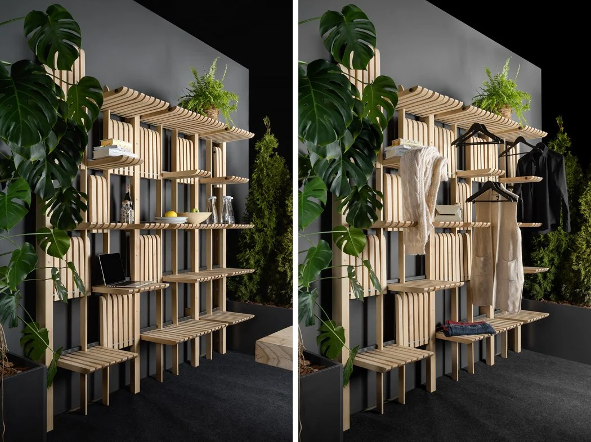

Shelf
However, the pilfering of products from store shelves grew by 12 percent between 2022 and 2023.
—Kate Nishimura, Sourcing Journal, 2 Aug. 2024
The ball sits on a shelf of a wooden credenza, surrounded by framed photographs and with the script facing out.
—Dan Wiederer, Chicago Tribune, 1 Aug. 2024
Customer shopping for school supplies with employee restocking shelves, Target store, Queens, New York.
—Jessica Dickler, CNBC, 31 July 2024
Perdue is perhaps best known for its products on grocery store shelves, including chicken, turkey, pork and beef.
—Christine Condon, Baltimore Sun, 31 July 2024
